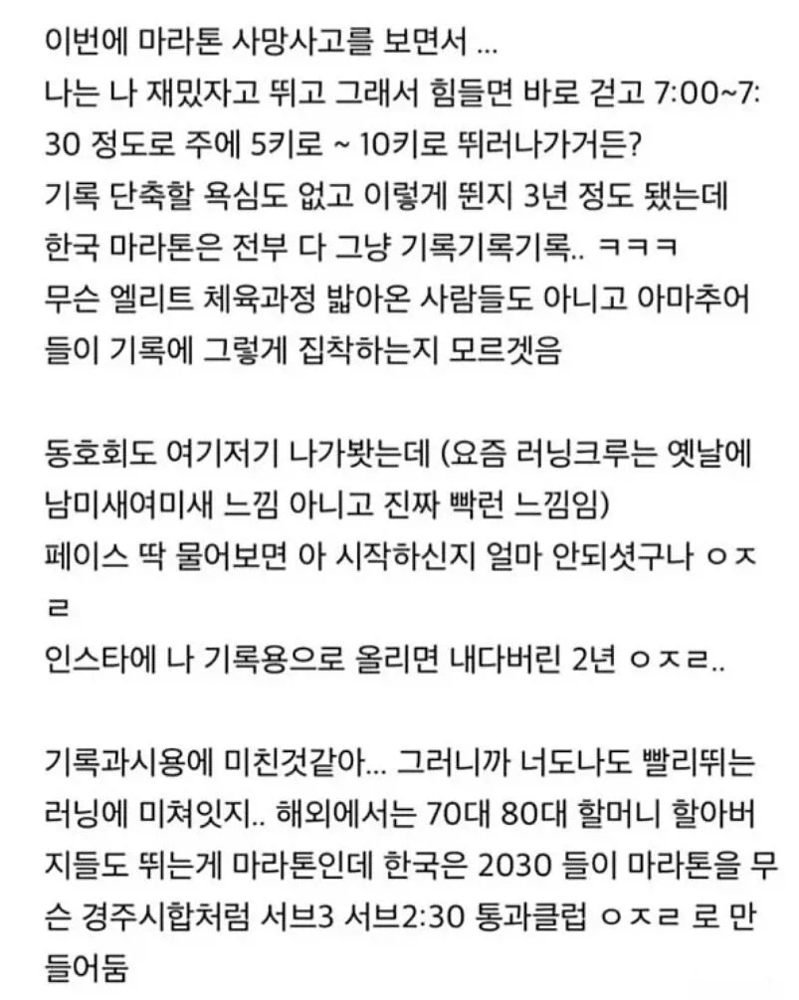

평페 7,8 나온다고 조롱하던 놈들 많긴 했지

평페 7,8 나온다고 조롱하던 놈들 많긴 했지
피해주면서 기록 기록 이지랄하니 빡치는거임. 공원 같은곳에서 뛸때 사람이 있으면 잠깐 옆으로 비키거나 하면되지 꼭 어깨치고 지나가면서 그 길에 있는 다른 사람들을 지 길막는 가림막 정도로 생각하면서 째려보고 가는데 기가참
러닝 말고 그냥 장거리 산책모임 이런게 차라리 평범체력이하나 평일출퇴 빡센 직장인들 건강에 더 나을거같음
러닝만 저러나?? 자전거도 저지랄 났었다가 민폐가 하도 미디어에 노출 되다보니 요즘은 덜함.
어쩔수없이. 더 심해질거라고 생각함. 옛날엔 그래도 조롱과 비난은 없었는데 요즘 애들은 조롱과 비난이 일상이라고 하니… 경쟁 후 티배깅은 점점 문화가 될듯
10키로 50분 나와서 40분대 들어가려고 주 50키로 뛰니까 바로 무릎 고관절 나가서 반년째 안 뛰는 중
오히려 천천히 뛰게 되는데
6월달에 페이스 500 이평균이였는데
부상이후 평균 페이스 600 이상으로 올라갔음
일부러 느리게 뛰는중
운동은 혼자 하는 게 정신 건강에 이롭습니다
초보자인데요 여자엉덩이보면서 10키로 뛰면 잼씀?
20키로뛰어도 더 뛰고싶을걸
진짜로 도핑효과있음 남자들 다 체감함ㅋㅋ
앞에 뛰던 여자가 갑자기 걷기 시작해서 추월하게 되면 뭔가 섭섭함
회사 아는사람 풀마라톤 3시간인가 4시간 뛰던데 잘하시는건가
풀마면 잘 뛰는거임
티를 많이 안내셔서ㅋㅋ
가끔 사진은 올리시던데
일단 풀코스를 뛴다는거 자체가 대단한거임
것도 4시간안에 들어오는건 이미 일반인이 아님
일단 풀을 뛰는게 대단한거지 ㅋㅋㅋㅋㅋ 나 10년 넘게 뛰고 대회는 작년부터 나갔는데 32k 나가고나서 풀 다시 생각해보고 있다 ㅋ
경쟁에 미친나라. 롤티어경쟁을 서브3 경쟁으로 바꿈
한국 자체가 그렇게 경쟁하듯
급속도로 성장했는데
어쩔수없는거지 문화적으로
롤도 솔직히 마스터도 마딱이라는 별명 있는거보면 쉽지않음 ㅋㅋㅋㅋ
나도 걍 5분 초반 페이스로 달림. 근데 다 기록 세울라고 안간힘이긴 하드라
마라톤 대회나가서 기록측정하는게 당연한거지 무슨 ㅋㅋㅋ 나도 기록 욕심있지만 그닥 심하지 않아서 맨날 혼자 뜀. 기록도 그냥 어플에 자동저장되지 어디 올리지도 않음. 동호회나가고 인스타에 올리는것도 내가보기엔 과시고 과욕이라 생각하는데 이건 또 아니라고 하는 사람들 태반일텐데 뭐. 남들 뭐라하는거 신경안쓰면 문제될거 하나없음.
안다치고 건강에 도움되게끔 살살뛰는게 좋은것이여
다들 그런 건 아닌데, 진짜로 나 좋다고 운동하는 건데 기록이나 페이스로 딴지 거는 인간들 비호감.
평페 7이면 걍 걷지 뭐하러 마라톤 뛰냐
이딴 소리가 괜히 나오는게 아님
대충 5km 5분25~30초 페이스로 뛰는게 제일 좋은듯
저거 레알임
입문할때부터 장비부터 프로수준으로 갖출려고하고
그 모든게 한 단어로 정리됨 '우월감'
내가 상대방보다 우월하는걸 비교하고 느끼려는 행동
이러니까 SNS에 미치는거고 P2W 게임에 돈을 그렇게 써대는거임
본인과의 싸움이 가장 기본적인 마음인데, 비교하고 싶은 원초적인 마음을 부정하긴 어렵지. 그리고 어르신들이 할말 없으니까 너 반에서 몇등하냐, 결혼 언제하냐 묻는것처럼, 러너들 끼리 할말 없으니까 스몰토크로 페이스 물어보는거임.
뛰면 희안하게 정강이가 아프더라 조금 참고 뛰면 귀신같이 안 아퍼 씹,,
신스플린트여
그냥 자기페이스에 맞게 뛰어
마라톤 뿐만 아니라 대한민국 모든 연령, 모든 분야에 걸쳐있는 문제임
게임 할 때도 티어라는 것이 실력을 나타내는 지표이긴 하지만,
결국 실력이라는 건 그만큼 시간, 관심, 열정 많이 박은 거라 앰생 방구석 개백수여서
플레이타임 많으면 당연히 티어 올리기 좋은 환경이라 실력이 안 오를 수가 없는 건데
애 딸린 직장인이라던가, 수험생이라던가 스트레스 해소 용으로 잠깐 게임 시간 쪼개서 하는거면
당연히 실력, 티어 키울 여력이 없는 것이고 게임 하는 관점도 다른 데
걔들은 인생 최대 업적이 게임 내 티어라 자기보다 좀만 낮으면 멸시하고 티어로 꺼드럭댐
웃긴건 게임이 직업인 챌린저 천상계~프로 들은 겸손하다는 것임. 애매한 애들이 나댐
몇 년 전부터 부모님 따라다니면서 같이 치려고 골프 배우고 있는데
결국 이쪽은 연령대가 높아서 안그럴줄 알았지만 오히려 더 심함
애매한 틀딱, 노인네들이 근본도 없는 야매스윙으로 어쩌다 하루 공 잘 맞아서 스코어 잘 나온 거 가지고
제대로 된 시합 룰로 했으면 그 스코어 안나왔을 텐데 온갖 편법(알까기, 컨시드, 무한 멀리건) 다 동원한 짭 스코어인데
자기도 돈만 있으면 프로 딴다, 세미프로, 2부투어프로들도 재수없으면 나한테 진다 하고 무시하는 게 일상이고,
자기보다 좀만 못친다 싶으면 입문자, 초보자들한테 야매 훈수 두고
좀만 맞는말 해도 그래서 니가 나보다 스코어 좋아? 하고 의견 뭉게는 게 일상임
(물론 매너 좋고 점잖으신 고수 어르신들도 있음)
한국식 줄세우기 좋아하는 서열 문화와 더닝 크루거 효과가 합쳐진 끔찍한 결과임
뭘 해도 딴사람한테 과시하고 남 깎아내리면서 비틱질 하려는 병신들 천국이지
길가는데 치고 지나가면서 째려본다? 바람구멍 나는거지.
달리면 무릎 다칠까봐 등산함
근데 등산도 위험해서 걍 아파트 계단이나 오름
슬로우 조깅 하는 사람들 조롱하는 경우도 많이 봤는데
책정과 측정을 혼동하는건 또 첨보네
약간 아메리칸 마인드네 ㅋㅋ